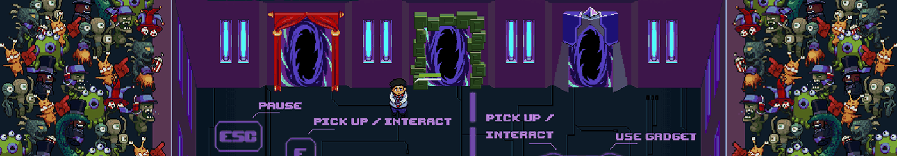
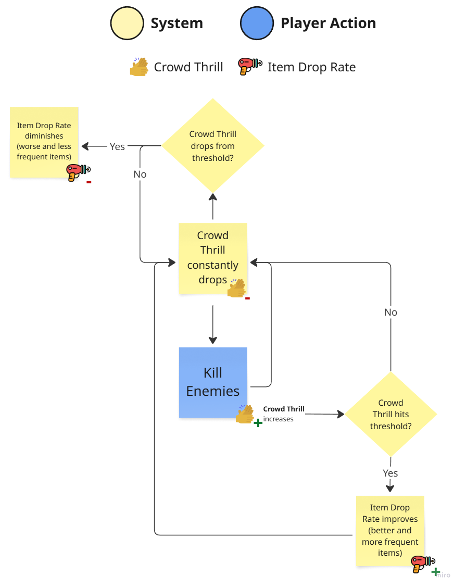
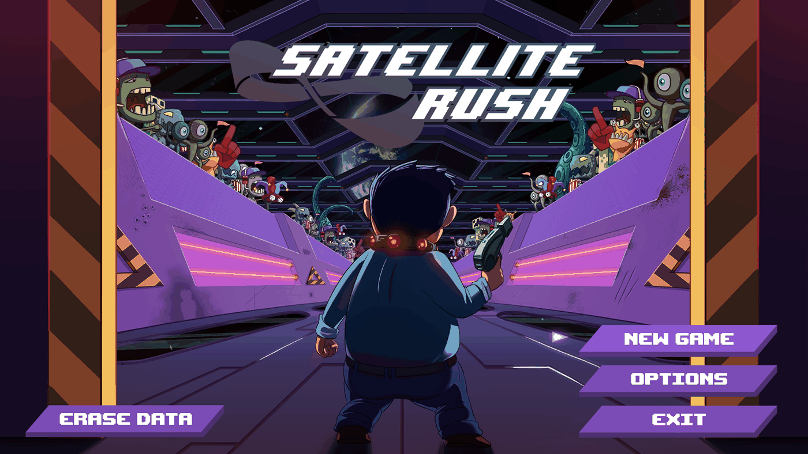
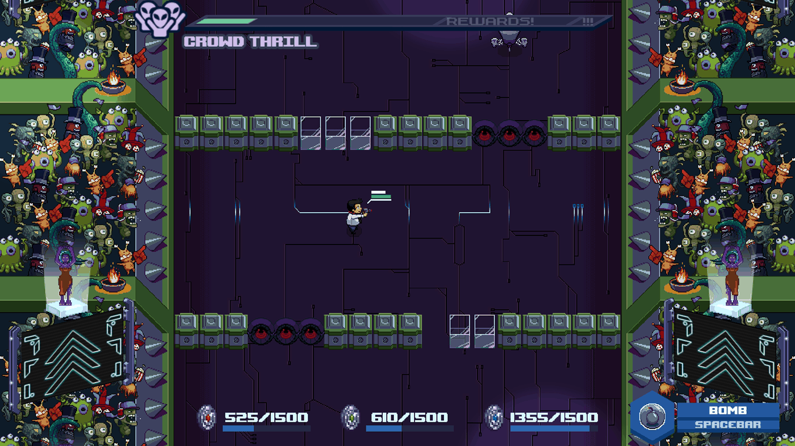
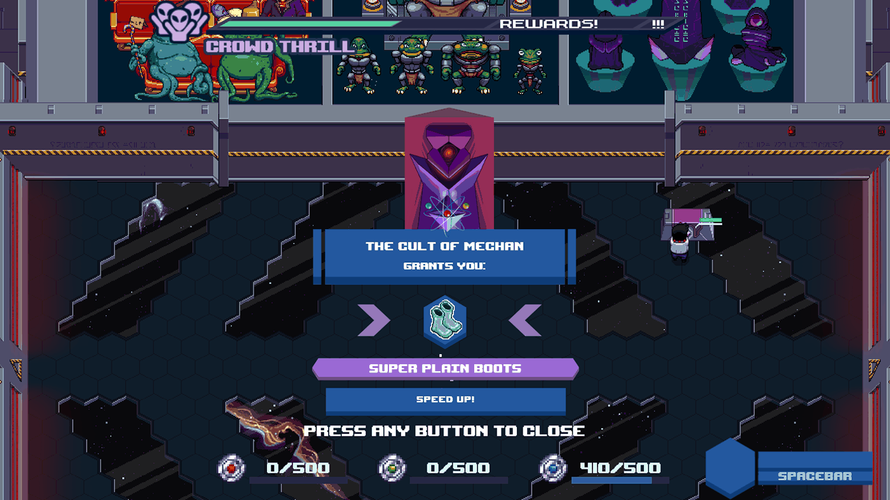
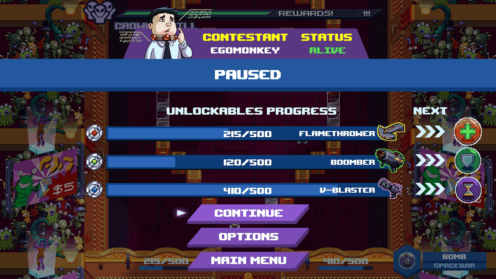
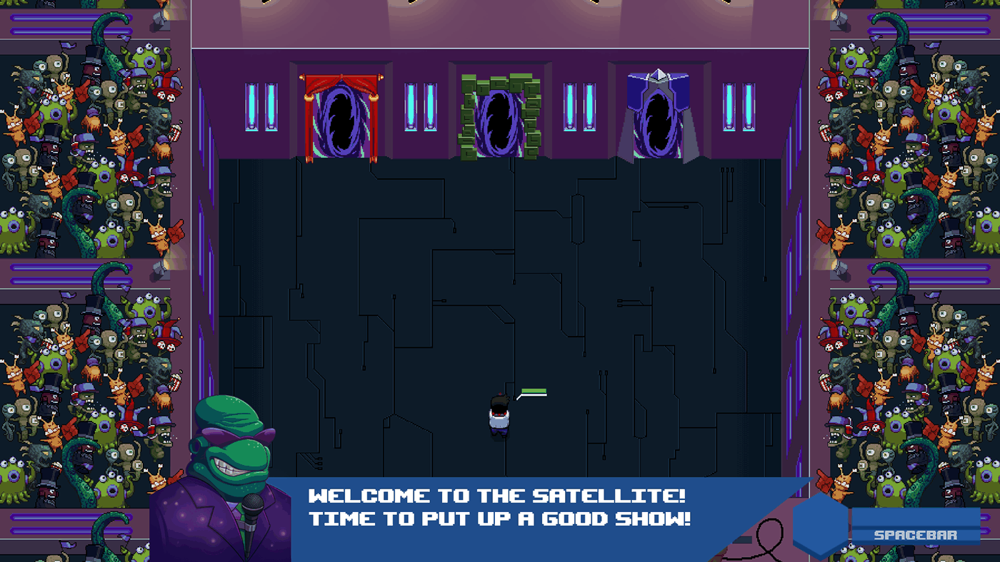
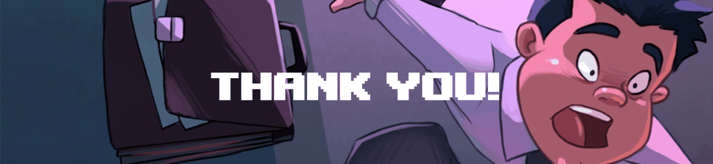

Satellite Rush
- StudioKimeric Labs
- RoleGame Designer
- PlatformPC
Project Overview
Satellite Rush is a Top-Down Shooter with Roguelike elements for PC, Mac and Linux. It was approved on Steam Greenlight and was later published by Plug In Digital. With this project, Kimeric Labs (the studio I cofounded) was selected to join a public incubator run by the State of Rio de Janeiro. The game also participated in Nuuvem’s Super BR Bundle Vol. 2, a collection of 10 quality Brazilian games curated by the largest marketplace in Latin America.
My Responsibilities
- Designing, playtesting, iterating and balancing all mechanics together with another Designer.
- Designing the UX/UI, implementing and animating it in the Unity engine.
- Owning a large portion of the project management.
Key Results
- Publishing deal with Plug In Digital and local funding from the State of Rio de Janeiro
Project Details
Below, you may find additional details on my work for both Game Design and UX/UI Design for Satellite Rush.
Game Design
Satellite Rush is a very fast-paced game, with a Design built around the fact that you are not an action hero, but a pathetic human being who got abducted and is desperately trying to put up a good show for an alien audience in order to survive.

You start the game with three doors in front of you, each leading to a different corridor with a unique boss at the end. Corridors are divided in randomized rooms where you must kill all enemies before moving on to the next one.
Below, you will find some of the key Design decisions explained.
Crowd Thrill
The game is about putting up a good show for the audience. Its main feature is the Crowd Thrill meter, shown in the upper part of the screen. This meter is constantly going down, but whenever you kill an enemy it goes up. After reaching a certain threshold, the audience will start throwing items for you.
This means the player cannot play in a very safe way, because this won’t make the meter go high enough and they will be stuck with the initial pistol. Also, items disappear after a little while once they are thrown in the arena, so the player must endanger themselves trying to get them.

Adaptability
Another crucial part of the gameplay is making fast decisions based on the resources you have at hand at the time. Weapons have a small amount of ammo, and you can’t choose which one the audience will throw next.
So the basic loop in the game mechanic is killing enemies fast, getting a new weapon or utility gadget, adapting your playstyle to what you just got, and keeping the Crowd Thrill high enough for you to immediately get a new item and restart the cycle.
This loop gets interrupted from time to time with a refreshing Boss Battle, and beating a boss rewards you with one of three different upgrades — the only time the player is able to pick what they are going to improve.
Progression
While Satellite Rush has permadeath (in the vein of the roguelike genre), the persistent progress comes with unlockables. By trying again and again to beat the game corridors, the player will collect coins. Each corridor has its own coin, and gathering enough of them will automatically unlock a new item.
Coins and unlockable items are the only resources that do not get wiped after the player dies, and provide a sense of accomplishment to counter the frustration of permadeath.
Randomization
Satellite Rush offers different challenges with each play. Corridors are a sequence of rooms, and room layouts have fixed object positions and fixed enemy spawn positions, where an enemy is drawn from a list we attach to that spawn position.
Each room layout also has a difficulty level attached to it, so the game checks some variables to determine the player’s performance (health, progression in the corridor, etc.) and picks the next room to fit their difficulty curve.
In addition to this, every Boss the player defeats unlocks additional challenges in the remaining corridors (like enemies leaving a fire tile where it died once the player defeats the fire Boss), which greatly multiplies possible situations and makes the order you’ll beat the three corridors a more strategic choice.
UI/UX
Satellite Rush is a simple game, but some of its features can be a little tricky for the player to grasp. The Crowd Thrill mechanic was, by far, the most iterated element, with the solution of a bar that shines and goes up when an enemy is killed, accompanied by balloons in the audience with the same icon used alongside the bar, being the most effective as playtests showed.
Visually, Satellite Rush is a 2D Pixel Art game, so the UI had to blend in with this visual. Not being a pixel artist myself, and given our available resources, I picked a simple flat style that would be populated by pixel art elements to which the attention would be drawn.
Below, you’ll find some of the UI elements.





